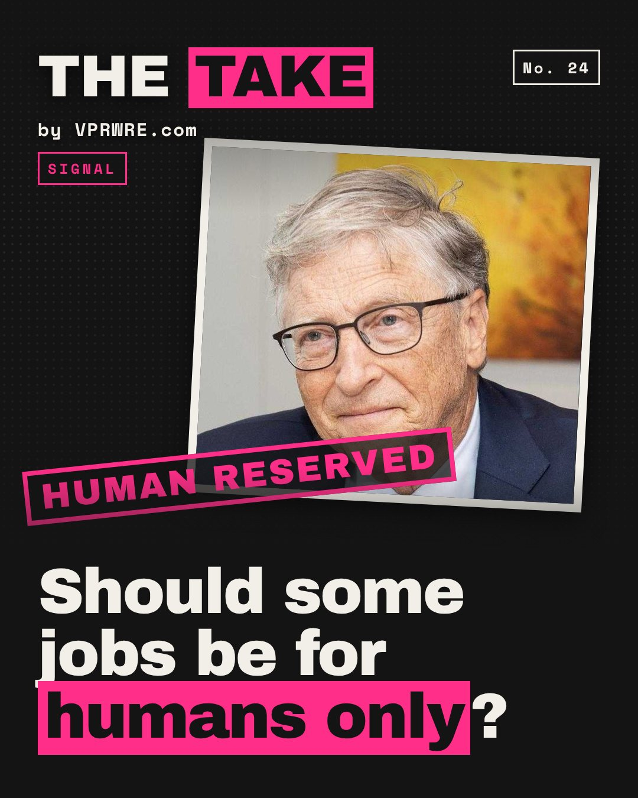

Work
Should some jobs be for humans only?
Bill Gates wants some jobs for humans only.

In an Aug 26 GatesNotes essay, Gates called for “Human Reserved” work: jobs kept for people, like childcare, jury service and delivering a terminal diagnosis. He also wants AI tokens and robots taxed, because “the tax system nudges you toward replacing people with machines.”
He tried this in 2017, telling Quartz a robot replacing a $50,000 worker should be taxed “at a similar level.” Critics shot it down.
“I love the heck out of Bill … but I don’t see what he sees,” Nvidia’s Jensen Huang said Aug 27. Oren Etzioni, on ABC: “taxing tokens is like taxing keystrokes on a typewriter.”
Rep. Greg Casar’s H.R. 10044 would tax 2% of token value or 3% of AI revenue. It’s still in committee. Meanwhile, Microsoft, which Gates co-founded, cut 4,800 jobs in July, the Seattle Times reports.
Gates told Axios that “in a very extreme form,” 40% of jobs could initially be reserved: his ceiling, not a plan. Who writes the list?
Our take: reserve the care, not the job. A diagnosis, a verdict, a child’s care: reserve those by law. Retrain people for everything else.
Some work is worth more because a person does it.
Which part of your job only counts if you do it?
The carousel
12 slides · Open on Instagram
Disclosure: VPRWRE drafts with Claude, Anthropic’s AI.